Наука · журнал «ДентАрт» 2017 №1
Анатомо-морфологічні, топографічні та біомеханічні особливості міжзубних контактних поверхонь постійних зубів. Частина I
ANATOMIC-MORPHOLOGICAL, TOPOGRAPHICAL AND BIOMECHANICAL FEATURES OF THE INTERDENTAL CONTACT POINTS OF PERMANENT TEETH. PART I
Я дивлюся на себе, як на дитину, котра, граючись на морському березі, знайшла кілька камінчиків, більш гладеньких, і черепашок, яскравіших, ніж вдавалося іншим, в той час як незмірний океан істини простягався перед моїм поглядом недослідженим.
Ісаак Ньютон (1642-1727)
Актуальність теми
Численні наукові публікації на тему карієсу зубів та його ускладнень свідчать про те, що проблема якісної діагностики, лікування і профілактики цього захворювання залишається однією з найважливіших у багатьох країнах світу.
За даними різних джерел, за останнє десятиріччя ураженість населення у віковій групі осіб молодого і зрілого віку досягла понад 90%,1 95-98%.2 При цьому спостерігається тенденція до збільшення захворюваності з віком, і здебільшого серед чоловіків.3
В. Румянцев (1999) встановив, що карієс на контактних поверхнях зубів спостерігався у 73,8% випадків від усіх виявлених каріозних дефектів. Подаються статистичні дані про поширеність карієсу проксимальних поверхонь бічних зубів: 40% від усіх уражень карієсом у боковій групі зубів і 43% від ураження карієсом усіх груп зубів.4
Д. Ніколаєв (2015) провів комплексний аналіз 583 композитних реставрацій постійних зубів у порожнинах класу ІІ за Блеком і дійшов висновку, що клінічним вимогам тою чи іншою мірою не відповідала абсолютна більшість досліджених реставрацій — 95,2±0,88% (р<0,05), що свідчить про низьку ефективність цього виду стоматологічної допомоги.5 У той же час у спеціальній літературі мало або практично не висвітлюються питання, пов'язані з морфологією, топографією міжзубних контактних пунктів та їх роллю у функціональній біомеханіці зубів.
Цілі і завдання дослідження
Вивчити макро- і мікроскопічні особливості морфології та топографії міжзубних контактних пунктів постійних зубів. Провести аналіз отриманих результатів і систематизувати основні типи контактних пунктів у вигляді класифікації, на основі загальних законів механіки визначити деякі особливості їх функціонування.
Матеріали і методи
Підготовку видалених за медичними показаннями зубів зі збереженою коронковою частиною робили за загальноприйнятою методикою без виготовлення шліфів. Фотографування на цифровому мікроскопі здійснювали у трьох режимах:
- кольорове;
- негатив;
- чорно-біле.
Використання трьох різних режимів мало на меті точніше відображення дрібних деталей рельєфу проксимальних поверхонь зубів. Форму і топографію міжзубних контактів вивчали на гіпсових моделях щелеп.
Результати та обговорення
Цифрова мікроскопія проксимальних поверхонь постійних зубів дозволила встановити, що морфологія і площа контактних пунктів від передніх до бічних зубів закономірно змінюються в результаті різниці виконуваної функції. Однак їх мікрорельєф має загальні риси, і головна полягає в тому, що контактні пункти часто представлені кількома самостійними майданчиками, в середньому двома-трьома, нагадуючи тим самим суглобові поверхні.
Результати дослідження засвідчили, що площа проксимальних поверхонь різниться і залежить від форми коронки і конфігурації верхньої 1/3 кореня та його напрямку (прямолінійний чи відхилення в дистальний бік) (іл. 1). На медіальній стінці опуклість емалево-цементної межі у бік ріжучого краю коронки більша, ніж на дистальній, і закономірно зменшується до 3-го моляра. Для фронтальної групи зубів верхньої щелепи характерне поздовжнє розташування контактних пунктів у вигляді двох окремих майданчиків, розділених тонким емалевим гребінцем, а отже на сусідньому зубі повинна міститися борозенка. Разом вони утворюють S-подібну фігуру. За своєю формою вони нагадують суглобові поверхні. Якщо взяти за основу класифікацію суглобів, то подібні міжзубні зчленування можна зарахувати до складних суглобів, де напрямні борозенка і гребінець усувають можливість бічного зісковзування і сприяють руху навколо однієї осі (іл. 2-4). При потраплянні горбиків у борозенки зубні ряди утворюють свого роду комбінований суглоб, що становить комбінацію кількох суглобів, які ізольовані один від одного, але функціонують разом. Такі, наприклад, обидва скронево-нижньощелепні суглоби, проксимальний і дистальний променево-ліктьові суглоби та ін. Подібний тип суглобового зчленування був виявлений на проксимальних поверхнях усіх груп зубів у результаті проведених власних досліджень (іл. 5, 6).
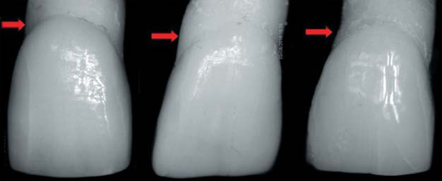
Іл. 1. Форма коронок центральних різців і конфігурація медіальної поверхні верхньої 1/3 кореня. Проксимальний медіальний контур коронки зуба більш варіабельний, ніж дистальний, що позначатиметься на формі, розташуванні та площі міжзубного контактного пункту. Фото О. Постолакі.
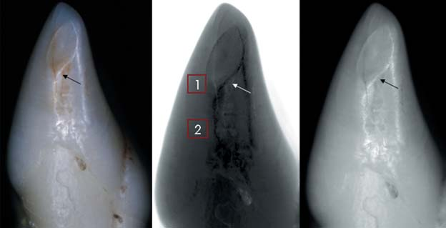
Іл. 2. Латеральний різець верхньої щелепи. Загальний вигляд проксимальної поверхні і двох поздовжніх контактних майданчиків латерального різця верхньої щелепи, розділених тонким косим емалевим гребінцем (цифрова мікроскопія). Фото О. Постолакі.
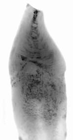
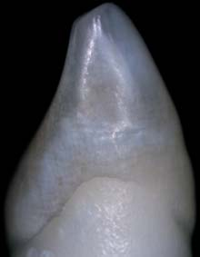
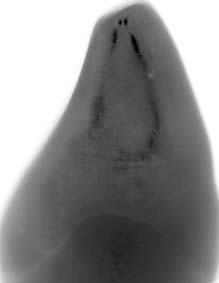
Іл. 3. Морфологічні особливості проксимальних контактних майданчиків фронтальної групи зубів верхньої щелепи: а) шліф латерального різця з інтактною проксимальною поверхнею. Контактний майданчик трикутної форми, з вершиною, спрямованою в бік ріжучого краю, де розташоване овальне заглиблення уздовж поздовжньої осі зуба; б, в) загальний вигляд проксимальної поверхні ікла верхньої щелепи з широким вертикальним контактним майданчиком у середній 1/3 коронки зуба. Фото О. Постолакі.
Біомеханіка міжзубних контактних майданчиків постійних зубів як складних суглобів
Те, що ми знаємо, — обмежене, а те, чого ми не знаємо, — безмежне.
П'єр-Симон Лаплас (1749-1827)
Біомеханіка — розділ біофізики, в якому вивчають механічні властивості тканин, органів і систем живого організму та механічні явища, що супроводжують процеси життєдіяльності, використовуючи як методичний апарат принципи механіки. «Загальний метод наукових досліджень полягає в тому, що при розгляді того чи іншого явища в ньому виділяють головне, визначальне, а від усього іншого, супутнього даному явищу, абстрагуються».6
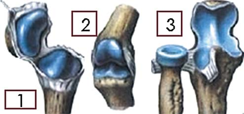
Іл. 4. Складні суглоби: 1) зап'ястно-п'ястний суглоб; 2) міжфаланговий суглоб кисті; 3) плечо-променевий суглоб.
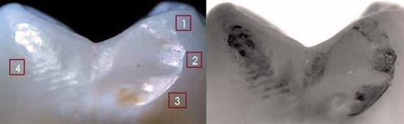
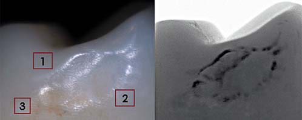
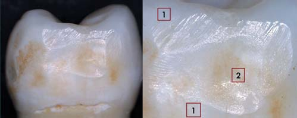
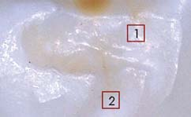
Іл. 5. Контактні майданчики складної конфігурації на проксимальних поверхнях бічних зубів (а, б, в). Фото О. Постолакі.
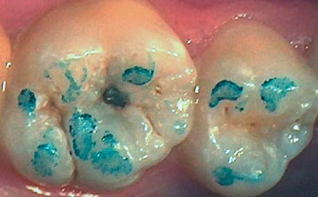
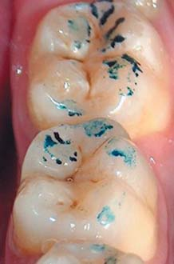
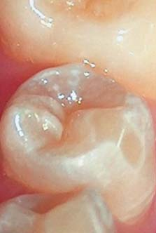
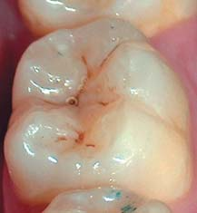
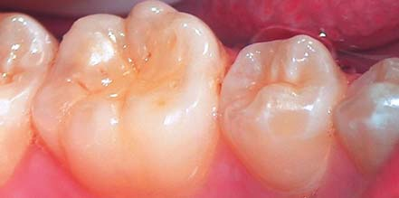
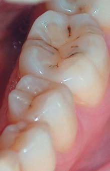
Іл. 6. Індивідуальні особливості анатомічної форми і контактних поверхонь бічних зубів. Фото О. Постолакі.
Витоками біомеханіки як однієї із найстаріших гілок біології є роботи Аристотеля і Галена, присвячені аналізу рухів тварин і людини. Наступний значний крок у розвитку цього напрямку було зроблено лише через більш ніж тисячу років завдяки працям одного з найвидатніших геніїв епохи Відродження — Леонардо да Вінчі (1452-1519), який докладно вивчав будову і рух птахів, тварин, але особливий інтерес виявляв до анатомії людського тіла.
Надалі великий вплив на розвиток біомеханіки зробив італійський натураліст Джованні Альфонсо Бореллі (1608-1679), який розробляв питання анатомії та фізіології з позицій математики і механіки. У своїй книзі «Про рух тварин» він, по суті, поклав початок біомеханіці як галузі науки. Д. А. Бореллі встановив, що рух кінцівок і частин тіла у людини і тварин при піднятті вантажів, ходьбі, бігу, плаванні можна пояснити принципами механіки.7 Як підкреслює С. М. Тарг,6 в основі механіки лежать закони, названі законами класичної механіки (або законами Ньютона), які встановлені шляхом узагальнення результатів численних дослідів та спостережень і знайшли підтвердження у процесі практичної діяльності. Це дозволяє розглядати знання, засновані на законах механіки, як достовірні.
Сили, що діють на тіло, змінюють його форму, тобто створюють деформацію. Під дією зовнішніх впливів усі тверді тіла, що існують у природі, тою чи іншою мірою деформуються. Величини цих деформацій залежать від матеріалу тіл, їх геометричної форми і розмірів та від діючих навантажень. Величина, що є основною мірою механічної взаємодії матеріальних тіл, у механіці називається силою. Сила, докладена до тіла в якій-небудь одній його точці, називається зосередженою. Сили, що діють на всі точки даного обсягу або частини поверхні тіла, називаються розподіленими. Поняття про зосереджені сили є умовним, оскільки практично докласти силу до тіла в одній точці неможливо. Сили, які в механіці розглядають як зосереджені, є, по суті, рівнодіючими деяких систем розподілених сил.
Класифікація анатомо-топографічних типів міжзубних контактів (за О. І. Постолакі, 2016)
Фронтальна група зубів:
- Площинний точковий:
а) у зоні ріжучих країв;
б) у зоні екватора. - Площинний лінійний — у зоні ріжучих країв та екватора.
Бічна група зубів:
- Площинний точковий – у зоні проксимальних поверхонь вестибулярних горбиків премолярів.
- Площинний лінійний – у зоні проксимальних поверхонь премолярів і молярів.
- Площинний кутовий – у зоні проксимальних поверхонь премолярів і молярів.
- Площинний S-подібний:
а) у зоні проксимальних поверхонь ІІ премоляра і І моляра верхньої щелепи;
б) у зоні проксимальних поверхонь молярів.
З точки зору стоматології, у трьох законах руху Ньютона в неявній формі міститься визначення сили, що нас цікавить, яке коротко і викладемо:
- Будь-яке тіло перебуває в стані спокою, доки які-небудь сили не виведуть його з цієї рівноваги.
- Сила надає тілу прискорення в тому напрямку, в якому вона діє.
- Якщо тіло А діє з певною силою на тіло Б, то останнє діє на тіло А з такою ж силою, але протилежно спрямованою.
Зміна форми тіла (деформація) від зовнішньої сили порушує його рівновагу. Так, під дією жувального навантаження, або сили F, у трьох площинах (у фронтальній, сагітальній та трансверзальній) відбувається деформація твердих зубних тканин і колагенових волокон періодонту (стискання і розтяг). Стискання або розтягу під дією докладеної сили зазнають усі тверді тіла. При припиненні деформації з'являється сила, що діє у протилежний бік і компенсує силу F. Сила, що виникає при деформації тіла і спрямована в бік, протилежний зміщенню частинок тіла, називається силою пружності (Fy).6
Для простішого розуміння розглянемо складний механізм розподілу жувального навантаження через міжзубні контактні пункти у медіо-дистальному напрямку на прикладі площинного кутового контакту, за розробленою авторською класифікацією (іл. 7). Сила тиску діє з боку виступу кутоподібної форми, наприклад проксимальної стінки зуба 35, на бічну поверхню зуба 36 (рис. 6 в, 7). Реакція відповіді у вигляді сили пружності чинитиме свою дію з боку деформованого тіла, а саме періодонтальних волокон і увігнутого контактного майданчика зуба 36. Сила пружності компенсує докладену силу F, і зуб 36 залишається у стані спокою, або рівноваги. Рівновагою тіла називається таке його положення, яке зберігається без додаткових впливів.
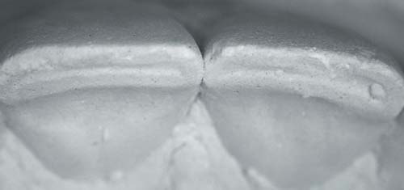
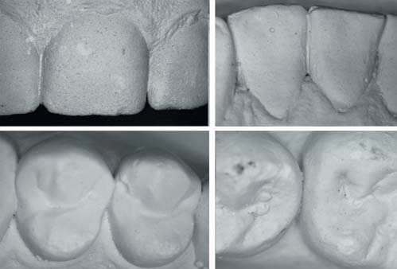
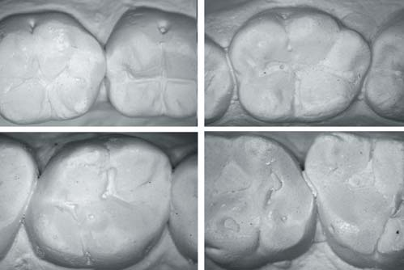
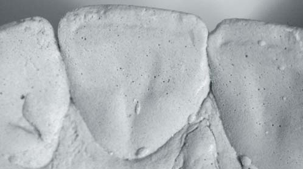
Іл. 7. Основні типи міжзубних контактних пунктів. Фото О. Постолакі.
Англійський вчений Роберт Гук (1635-1703) експериментально встановив такий закон. Сила пружності (Fy), що виникає за малої (порівняно з розмірами тіла) деформації, прямо пропорційна величині деформації (х) і спрямована у бік, протилежний зміщенню частинок тіла:
Fу = - k х
Коефіцієнт пропорційності k називається жорсткістю тіла (залежить від розмірів, форми і матеріалу). У СІ жорсткість виражається в ньютонах на метр (Н/м).
Сила тертя спокою — сила, що виникає на межі дотичних тіл при відсутності їх відносного руху (іл. 8). Сила тертя спокою спрямована по дотичній до поверхні стикання тіл у бік, протилежний силі F, і рівна їй за величиною: Fтр.= - F.
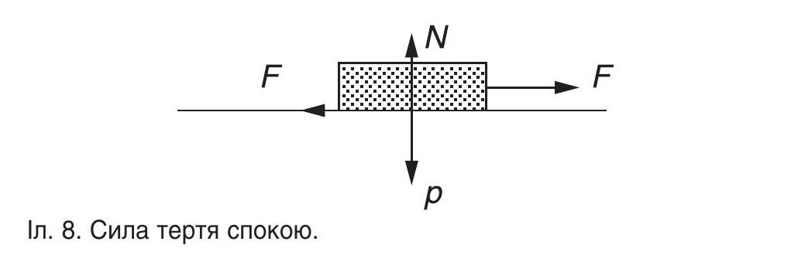
Іл. 8. Сила тертя спокою.
Якщо цей закон застосувати до щільного з'єднання контактних пунктів, то у такому випадку мікроруху у цій зоні при жувальному тиску не буде до того моменту, доки докладена сила не перевищить певного мінімуму, рівного максимально можливій (граничній) силі тертя. Сили тертя діють паралельно поверхням, що дотикаються, але гранична сила тертя між двома поверхнями пропорційна перпендикулярній до них силі, яка притискає їх одну до одної.8
Важелем називається будь-яке тверде тіло, здатне здійснювати обертальні рухи навколо осі, на плечі якого діють дві протилежні сили: рушійна сила (м'язові скорочення) і сила опору. Вид важеля залежатиме від місця розташування точки докладання сили і точки дії сили (іл. 9-11). У залежності від величини діючої сили і сили опору можливі рівновага або рух важеля.
Важіль 1-го роду — двоплечий, має назву «важіль рівноваги». Точка опори розташовується між точкою докладання сили (сила м'язового скорочення) і точкою опору (сила ваги або маса органу). Прикладом може бути з'єднання черепа з вершиною хребта зі спрямованою вниз силою, яке забезпечує переміщення голови у сагітальній площині. Коли вага голови збалансована силою м'язів, також спрямованою вниз, то в цей момент настає рівновага. При рівновазі важеля під дією двох паралельних сил вісь обертання ділить відстань між точками докладання на відрізки, обернено пропорційні величинам сил. Це означає, що важіль 1-го роду діє за типом балансира* (іл. 9 а, 10).
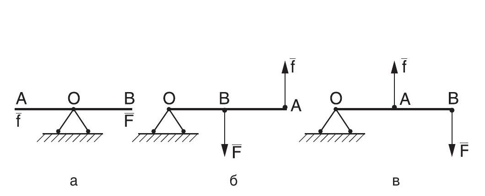
Іл. 9. Види важелів у механіці 1-го, 2-го і 3-го роду.
Важіль 2-го роду — одноплечий важіль, має назву «важіль сили», оскільки докладання сил має протилежні напрямки. Рушійна сила діє на довге плече важеля, а сила опору — на коротке плече. Багато суглобів працюють за принципом важеля другого роду. Наприклад, у передпліччі або гомілковостопному суглобі одна сила діє вгору, друга — вниз. Тиск, який виникає в осі обертання важеля, відповідає різниці діючих сил (іл. 9 б).7
У важелів 3-го роду, або «важеля швидкості», точки докладання м'язів та ваги знову лежать по один бік від осі обертання, однак тепер точка докладання м'яза розташована ближче до осі, ніж вага.9 Наочними прикладами можуть бути функція нижньої щелепи, згинання передпліччя при утриманні вантажу в руці (іл. 9 в).
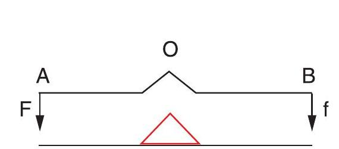
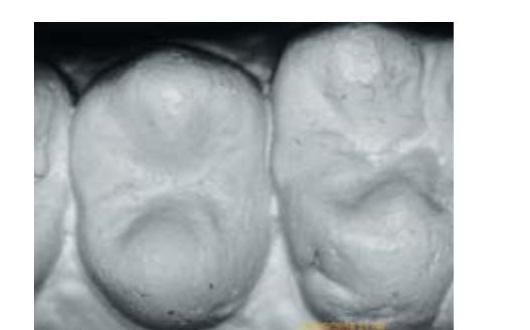
Іл. 10. Схема міжзубного площинного контактного пункту в зоні зубів 25, 26 як важеля 1-го роду. Схема і фото О. Постолакі.
Результати проведеного дослідження засвідчили, що в залежності від анатомо-топографічного розміщення зубів, форми і взаємовідношення проксимальних поверхонь та розташування контактного пункту можна говорити про наявність важеля 1-го або 2-го роду (іл. 11, 12). Наприклад, важіль 1-го роду утворюється в зоні контактного пункту між іклом і першим премоляром верхньої щелепи на рівні центральної фісури останнього. У таких випадках оклюзійні контакти зазвичай розташовані на крайових емалевих валиках і медіальному схилі піднебінного горбика, а отже, точки дії сили перебувають по один бік від місця розташування точки докладання сили (точки опори), тобто міжзубного контактного пункту (іл. 12).
Важіль 2-го роду утворюється в тому випадку, коли контактний пункт міститься вестибулярніше від центральної фісури, в тому числі і між премолярами. При цьому їх піднебінні горбики дещо повернуті один щодо одного.
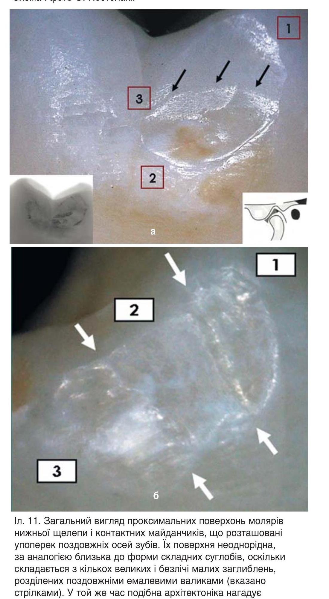
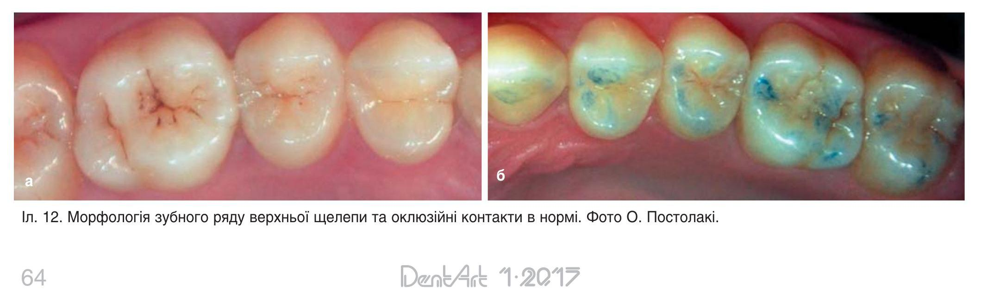
Певною мірою ми вже порушували питання, пов'язані зі статикою — розділом механіки, предметом якого є матеріальні тіла, що перебувають у стані спокою при дії на них зовнішніх сил. У широкому сенсі слова статика — це теорія рівноваги будь-яких тіл: твердих, рідких чи газоподібних (іл. 14). І надалі наше дослідження також буде спиратися на закони статики при вивченні біомеханіки зубів.
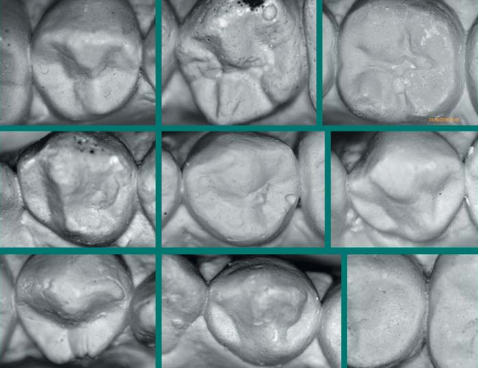
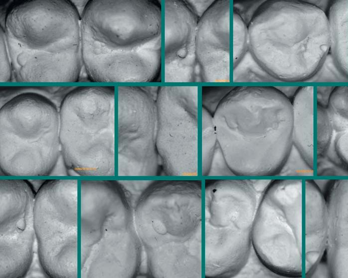
Іл. 13. Варіанти міжзубних контактних пунктів на бічних зубах (а, б). Фото О. Постолакі.
А тепер — коротка історична довідка. Статика — найстаріший розділ механіки: деякі з її принципів були відомі вже стародавнім єгиптянам і вавилонянам, про що свідчать побудовані ними піраміди і храми. Серед перших творців теоретичної статики був Архімед (близько 287-212 до н. е.), який розробив теорію важеля і сформулював основний закон гідростатики.
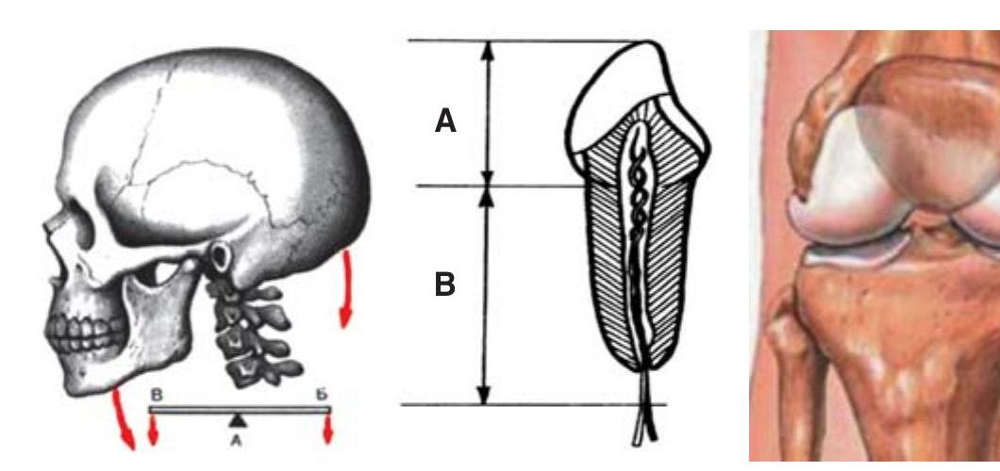
Іл. 14. Важелі 1-го роду (важіль рівноваги): а) в атланто-потиличному зчленуванні (А — точка опори; Б — точка докладання сили; В — точка опору); б) *зуб як важіль першого роду; в) стегново-великогомілкове зчленування колінного суглоба. Міжвиросткова ямка стегнової кістки з'єднується з міжвиростковим виступом великогомілкової кістки.
Родоначальником сучасної статики став голландець Симон Стевін (1548-1620), який 1586 р. сформулював закон додавання сил, або правило паралелограма, і застосував його при розв'язанні низки задач шляхом відповідних геометричних побудов (геометричний та графічний методи) і числових розрахунків (аналітичний метод).6
У наступні століття ряд видатних учених-біологів, фізиків і математиків (Лаплас, Пуассон, Остроградський, Жуковський, Чаплигін) розробляли в різних аспектах теоретичну доказову базу і питання практичного застосування правила паралелограма.
П. Вариньон (1654-1722) — французький математик і механік, друг Ньютона, Лейбніца і Бернуллі, дав найточніше формулювання закону паралелограма сил, розвинув поняття моменту сил і вивів теорему, яка отримала ім'я Вариньона.
Таким чином, підсумовуючи сказане вище, доходимо висновку, що за допомогою законів статики дослідники визначають величину або напрямок діючої і протидіючої сил, складають і розкладають сили на складові, які діють у різних напрямках, що, безсумнівно, надає значну допомогу у візуалізації ймовірних реакцій різноманітних об'єктів.
Далі буде: Частина II
*Балансир — (франц. Balancier — коромисло) — двоплечий важіль, який здійснює хитальні (коливальні) рухи біля нерухомої осі.
*Кожен зуб має центр мас, але оскільки зуби не належать до вільних тіл (вони утримуються періодонтом), то важливішою точкою зуба є центр опору. Це точка рівноваги зуба.9
Література
- Лидман Г.Ю., Ларионов П.М., Савченко С.В. Комплексная морфологическая оценка твердых тканей зуба при кариозном поражении. Сибирский медицинский журнал. 2009, 3-1, Том 24. —С. 67-72.
- Зайцев А.Н. Распространенность кариеса зубов. Сибирский медицинский журнал (Иркутск). 2004, 6, Том 47. —С. 86-88.
- Якушечкина Е.П. Повышение эффективности восстановления контактного пункта жевательной группы зубов. Дис. ... канд. мед. наук. –Тверь, 2003. —116 с.
- Арнаутов Б.П. Оптимизация восстановления контактных поверхностей зубов боковой группы. Автореф. дис. ... канд. мед. наук. –Самара, 2016. —23 с.
- Николаев Д.А. Диагностика и лечение кариеса контактных поверхностей жевательных зубов: клинико-лабораторное исследование. Автореф. дис. ... канд. мед. наук. –Тверь, 2015. —18 с.
- Тарг С. М. Краткий курс теоретической механики: Учеб. для втузов. – 10-е изд., перераб. и доп. – М.: Изд-во Высш. шк, 1986. —416 с.
- Дубровский В.И., Федорова В.Н. Биомеханика: Учеб. для сред. и высш. учеб. заведений. –М.: Изд-во ВЛАДОС-ПРЕСС, 2003. —672 с.
- Александер Р. Биомеханика. Пер. с англ. Ю.И. Лашкевича. – М.: Изд-во «Мир», 1970. –С. 63.
- Герман И. Физика организма человека. Пер. с англ.: Научное издание / И. Герман / Долгопрудный: Изд.-кий Дом «Интеллект», 2011. –992 с.